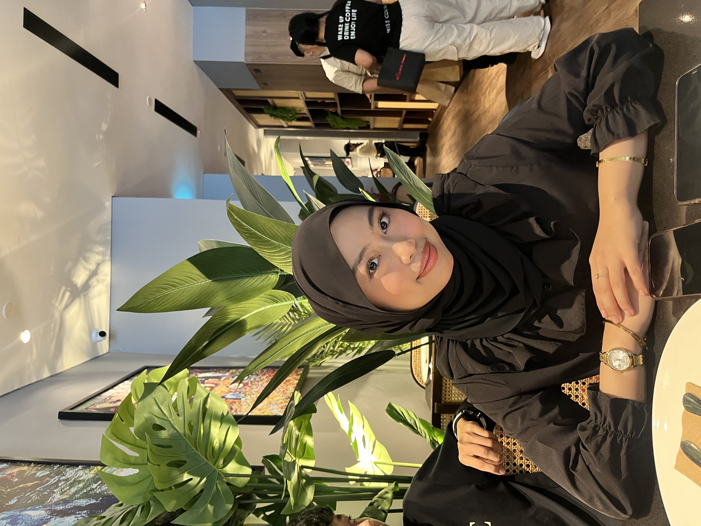
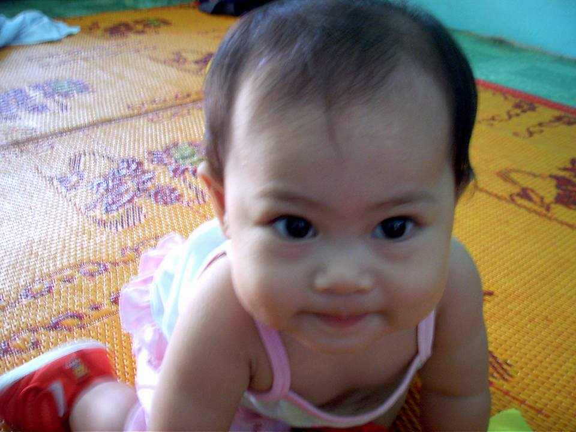

| Full Name | Nur Amirah Syazwana Binti Shahrul Faizal |
|---|---|
| Nickname | Wana |
| Age | 21 years old |
| Date of Birth | 6 April 2005 |
| Birthplace | Hospital Sultanah Aminah, Johor Bahru |
| Currently Living | Banting, Selangor I still take pride in my Johor roots. |
| Family | 🌼 Eldest of three siblings | Personality |
💗 People often describe me as firm, independent, and caring, especially toward my family. 🌷 Being firm does not mean being harsh it shows love and responsibility. ✨ I am disciplined, patient, and adaptable. I enjoy taking on challenges that help me grow and learn. 💫 I believe a clean environment reflects a clear and focused mind. 🧺 I love cleaning, organizing, and decorating spaces to make them cozy and motivating. 💖 My family and friends are my biggest support, always inspiring me to do better each day. |
 Image
Image